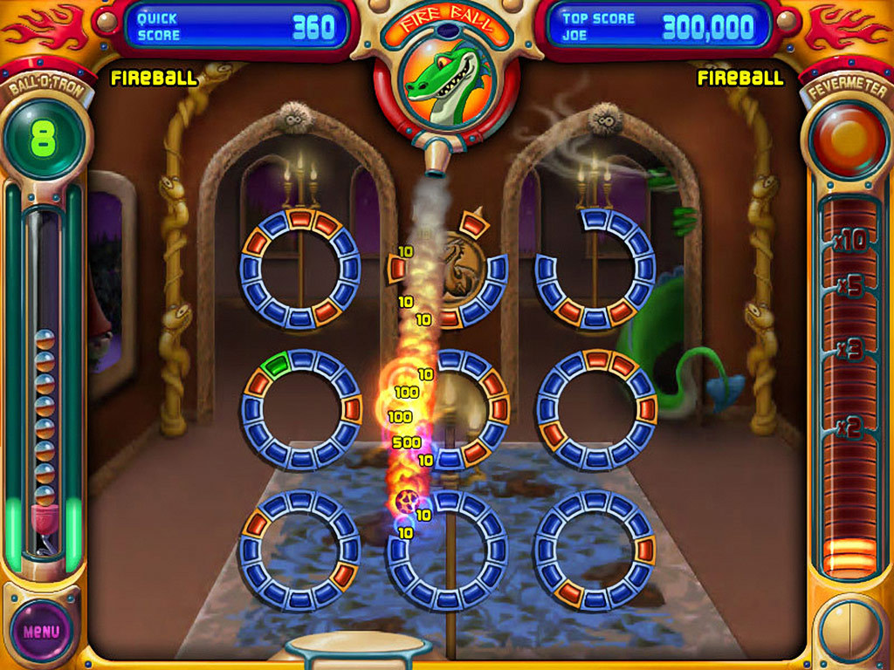
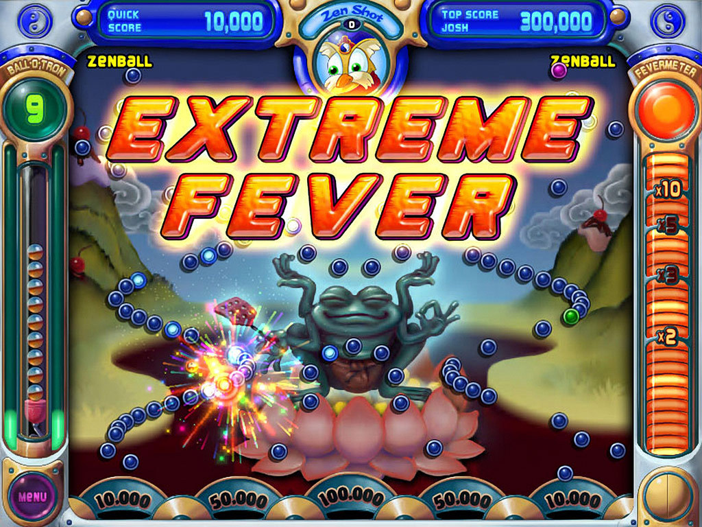

Portal 2
Portal 2 introduces a cast of dynamic new characters, a plethora of fresh puzzle elements, and an expansive array of devious test chambers. Players will delve into uncharted territories within the Aperture Science Labs, encountering a variety of challenges designed to test their wit and ingenuity. Alongside revisiting GLaDOS, the occasionally murderous computer companion, players will encounter new faces, each with their own quirks and motivations. From the gel-like substances that alter physics to the ingenious propulsion and excursion funnels, Portal 2 expands upon the puzzle-solving mechanics of its predecessor, offering players a deeper and more immersive experience within the inventive world of Aperture Science.
Wikipedia: Portal 2
Wikipedia: Portal 2

More pictures
Peggle
Take your best shot with energizing arcade fun! Aim, shoot, clear the orange pegs, then sit back and cheer as 10 whimsical teachers guide you to Peggle greatness. Conquer 55 fanciful levels with 10 mystical Magic Powers, racking up bonus points and shots you'll smile about for weeks. Face off against your friends in Duel Mode, or tackle 75 extra-tricky challenges. It's luck and skill and joyous thrills, and amidst all this fevered action only one question remains: Can you become a Peggle Master?
Wikipedia: Peggle
Wikipedia: Peggle
More pictures


Return of the Obra Dinn

In 1802, the merchant ship Obra Dinn set out from London for the Orient with over 200 tons of trade goods. Six months later it hadn't met its rendezvous point at the Cape of Good Hope and was declared lost at sea. Early this morning of October 14th, 1807, the Obra Dinn drifted into port at Falmouth with damaged sails and no visible crew. As insurance investigator for the East India Company's London Office, dispatch immediately to Falmouth, find means to board the ship, and prepare an assessment of damages.
Wikipedia: Return of the Obra Dinn
Wikipedia: Return of the Obra Dinn
More pictures

Personal Favorite:
Portal 2